Hướng dẫn thí sinh đăng ký xét tuyển trực tuyến Đại học năm 2016

Lần cập nhật cuối lúc Thứ hai, 01 Tháng 8 2016 13:16 Viết bởi Administrator Thứ hai, 01 Tháng 8 2016 12:45
Ngày 1/8, đợt đăng ký xét tuyển đại học, cao đẳng đầu tiên năm 2016 sẽ chính thức bắt đầu. Để giúp thí sinh (TS) có thể thực hiện đăng ký xét tuyển trực tuyến thuận lợi và dễ dàng, Bộ GD&ĐT hướng dẫn ngắn các bước để TS thực hiện đăng ký xét tuyển trực tuyến.
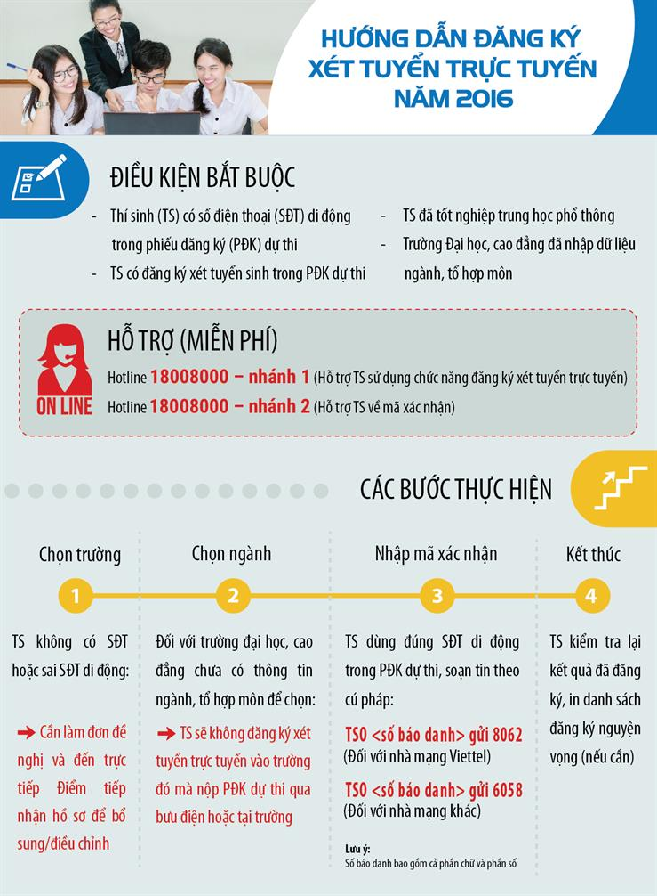
Bước 1: Đăng nhập
- Sau khi nhận được tài khoản đăng nhập gồm Số CMND, Mã đăng nhập do Điểm TNHS cung cấp hoặc do Hệ thống gửi về email, Thí sinh đăng nhập vào Hệ thống như sau:
- Truy cập vào website http://thisinh.thithptquocgia.edu.vn
- Nhập các thông tin Số CMND, Mã đăng nhập, Mã xác nhận và nhấn nút Đăng nhập
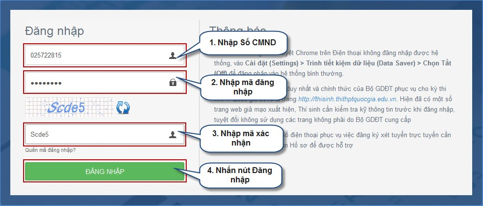
Bước 2: Cập nhật diện ưu tiên xét tuyển
- Để thực hiện Cập nhật diện ưu tiên xét tuyển, thí sinh chọn mục “Đăng ký tuyển sinh”
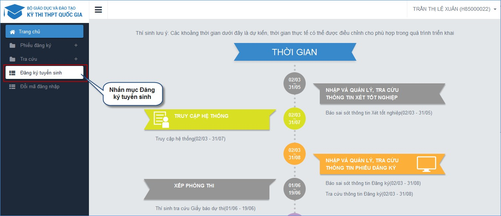
- Sau khi chọn mục “Đăng ký tuyển sinh”, trên màn hình hiển thị một số thông tin cá nhân của thí sinh và thông tin đợt tuyển sinh hiện tại:
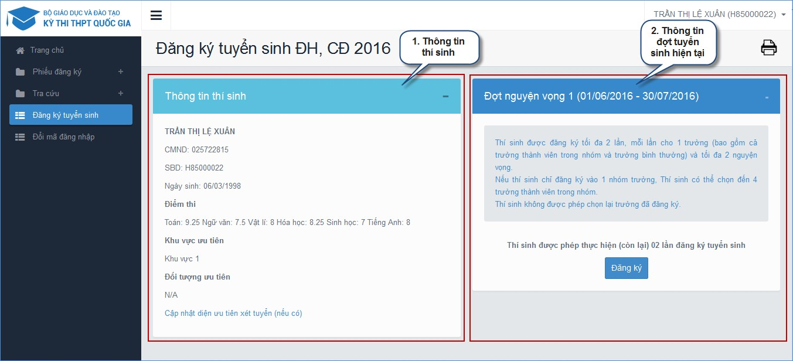
- Tại màn hình Thông tin thí sinh, thí sinh nhấn link “Cập nhật diện ưu tiên xét tuyển(nếu có)” để vào cập nhật diện ưu tiên.
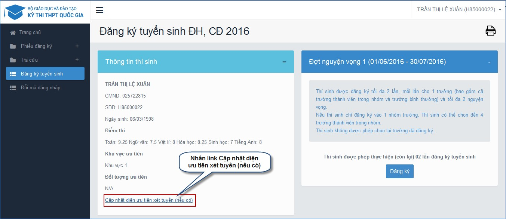
- Sau khi nhấn link Cập nhật diện ưu tiên xét tuyển (nếu có), màn hình hiển thị:
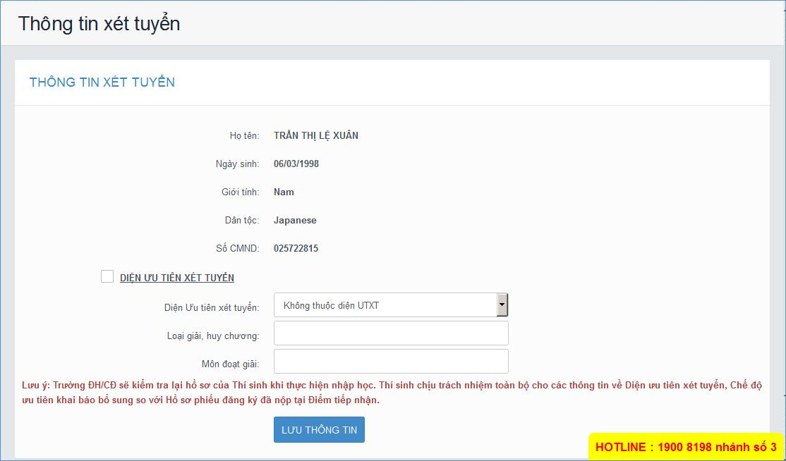
- Thực hiện Cập nhật diện ưu tiên theo các bước sau:
+ Tích chọn mục DIỆN ƯU TIÊN XÉT TUYỂN
+ Chọn Diện ưu tiên xét tuyển
+ Nhập các thông tin: Loạt giải, huy chương; Môn đoạt giải
+ Nhấn nút Lưu thông tin
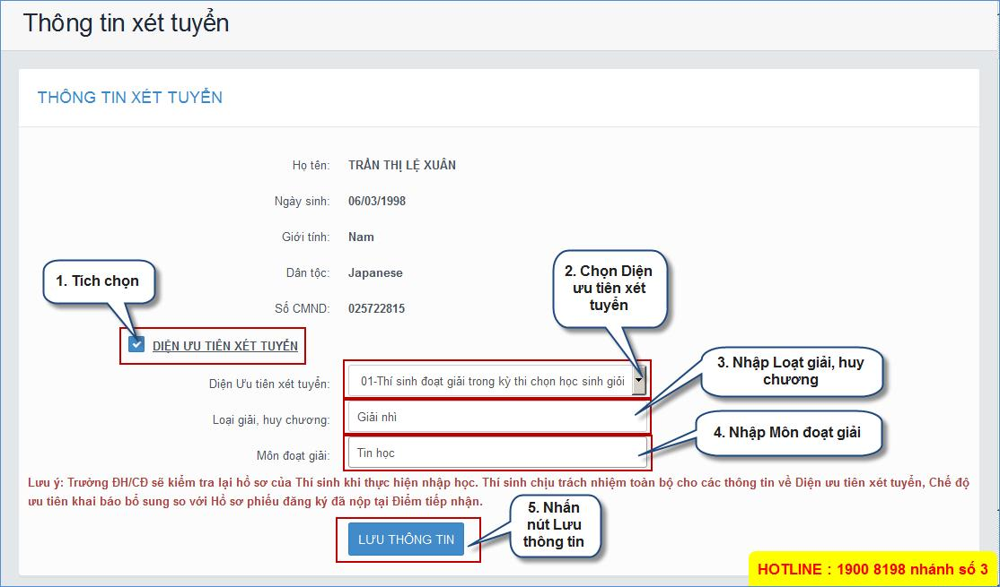
Bước 3: Vào chức năng Đăng ký tuyển sinh
- Sau khi nhấn mục Đăng ký tuyển sinh, thí sinh nhấn nút “Đăng ký” trên màn hình để bắt đầu thực hiện đăng ký tuyển sinh.
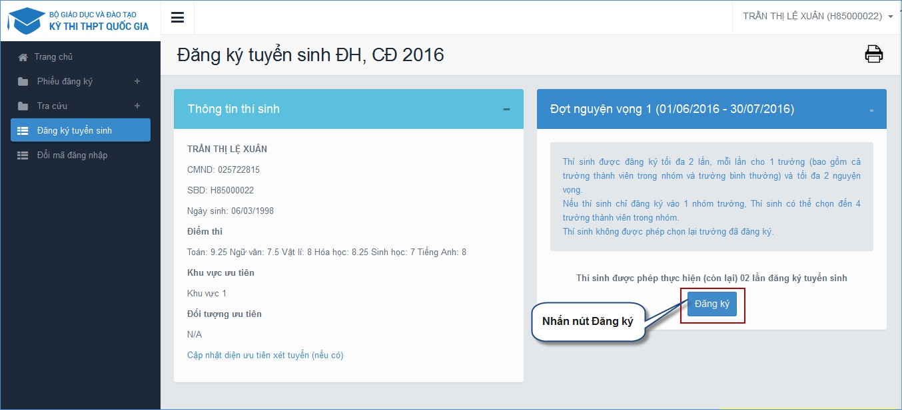Bước 4: Chọn trường
- Trên màn hình Chọn trường, thí sinh thực hiện tìm kiếm trường muốn đăng ký.
- Sau khi đã tìm kiếm được trường muốn đăng ký, thí sinh chọn trường đó và nhấn nút “Tiếp theo” để chuyển sang bước tiếp theo
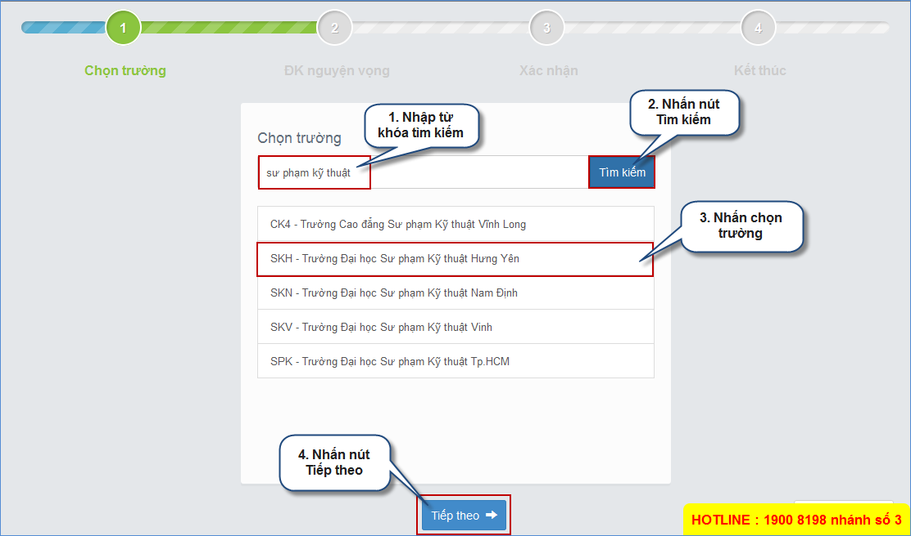Bước 5: Chọn ngành
Bước 5.1: Trường hợp thí sinh chỉ đăng ký vào trường đơn lẻ HOẶC đăng ký đồng thời vào trường đơn lẻ và nhóm trường
- Tổng số trường mà thí sinh được đăng ký là 2 trường, mỗi trường không quá 2 ngành.
- Màn hình chọn ngành hiển thị như hình sau, thí sinh thực hiện chọn tuần tự từ trên xuống dưới, từ trái qua phải:
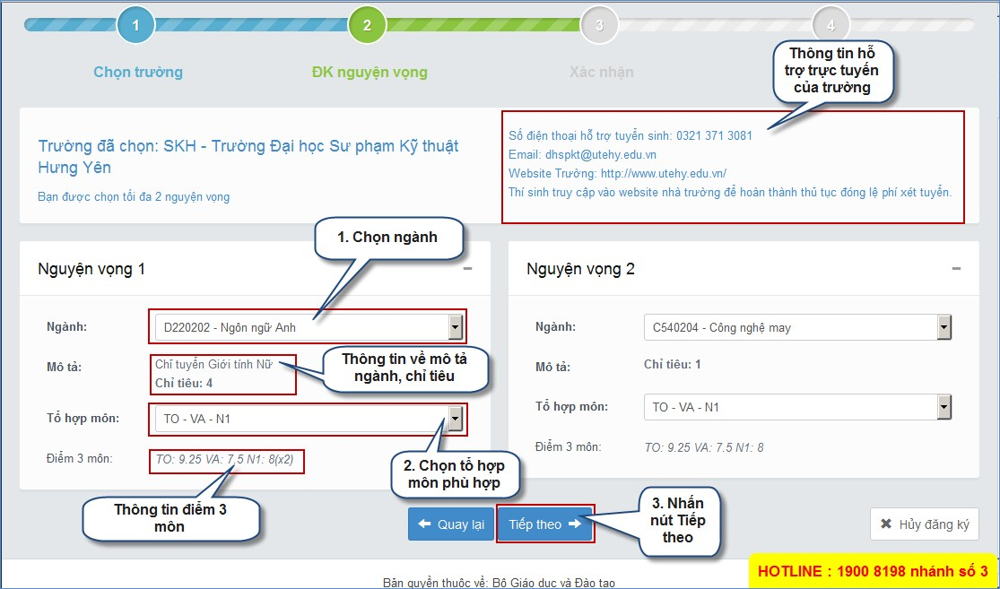Bước 5.2: Trường hợp thí sinh chỉ đăng ký vào nhóm trường
- Thí sinh được đăng ký tối đa là 4 ngành như màn hình sau. Trong đó, thí sinh có thể chọn:
+ Mỗi nguyện vọng là 1 trường thành viên -> Tương đương đăng ký nguyện vọng ở 4 trường khác nhau.
+ Hoặc mỗi trường thành viên 1 đến 2 nguyện vọng -> Đăng ký ở 2 hoặc 3 trường thành viên.
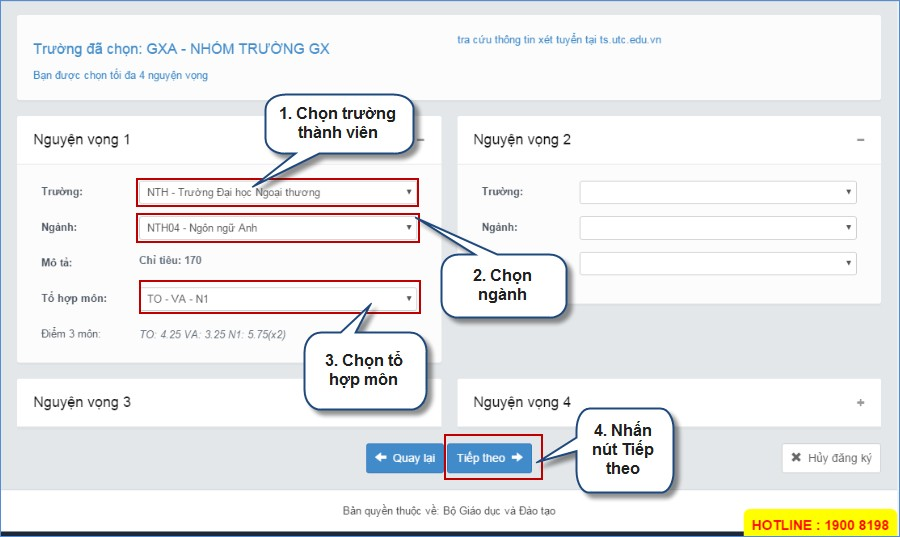Bước 6: Xác nhận
- Sau khi chọn xong nguyện vọng, thí sinh sử dụng đúng số điện thoại đã điền trong phiếu đăng ký soạn tin theo cú pháp:
+ TSO <Số báo danh> gửi 8062 (Đối với nhà mạng Viettel)
+ TSO <Số báo danh> gửi 6058 (Đối với nhà mạng Khác)
- Sau đó, hệ thống trả về tin nhắn như sau:
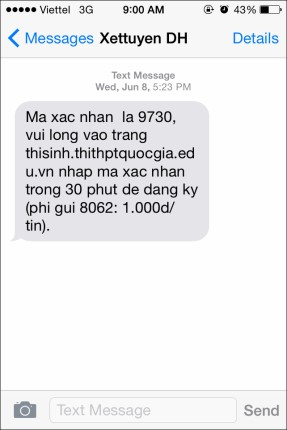
Thí sinh nhập mã xác thực:
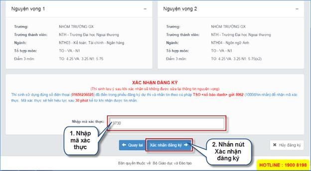
- Tiếp theo, thí sinh nhấn nút “Xác nhận đăng ký”, màn hình xác nhận đăng ký hiển thị, nếu đồng ý với thông tin đã đăng ký thí sinh nhấn OK, hoặc nhấn Cancel để hủy.
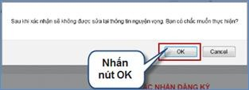
Bước 7: Kết thúc
- Sau khi nhấn OK xác thực màn hình hiển thị danh sách nguyện vọng đã đăng ký, để kiểm tra thông tin nguyện vọng đã đăng ký nhấn vào nút “Về trang danh sách phiếu đăng ký”
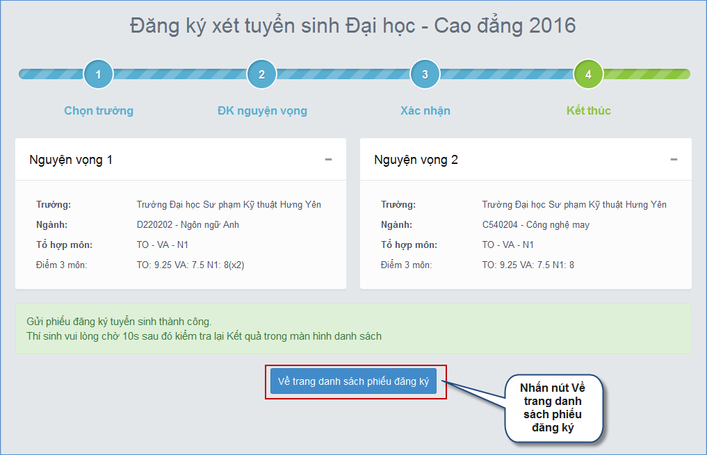
- Sau khi về trang danh sách nguyện vọng, màn hình hiển thị thông thí sinh và thông tin đăng ký nguyện vọng:
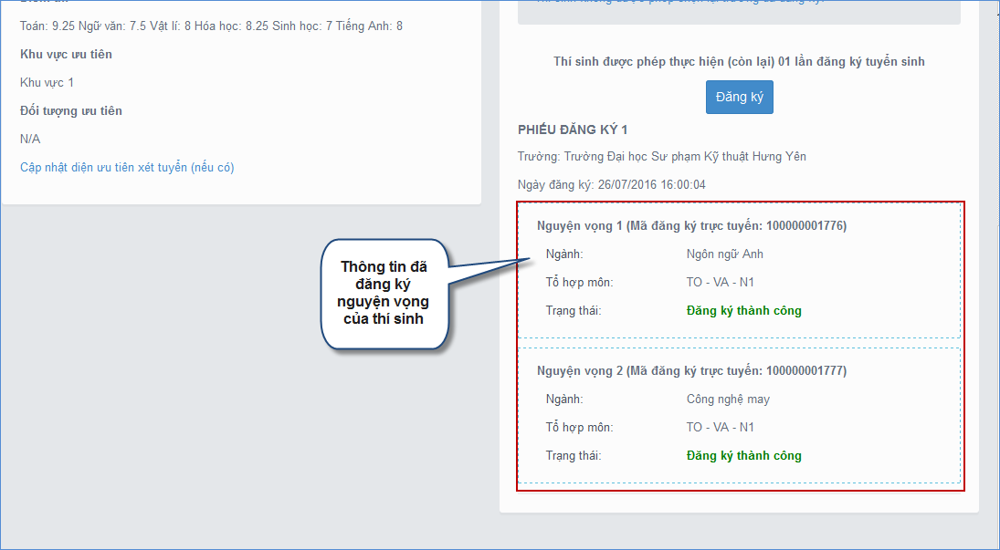
- Tại màn hình trang danh sách nguyện vọng thí sinh có thể thực hiện In danh sách nguyện vọng
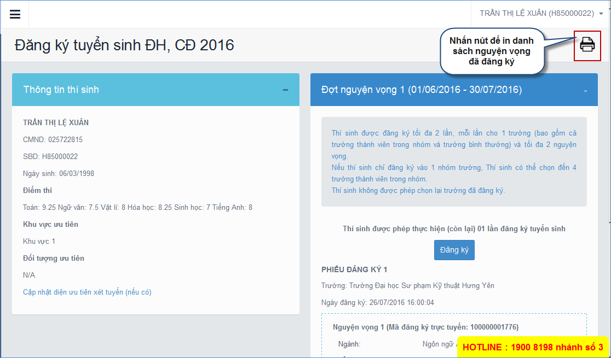
Những lưu ý quan trọng:
- Thí sinh sử dụng số điện thoại đã đăng ký trong hồ sơ để nhắn tin lấy mã xác thực OTP -> Nếu sai số điện thoại, Thí sinh cần liên hệ ngay với Điểm tiếp nhận hồ sơ để điều chỉnh lại.
- Nếu thí sinh cần hỗ trợ về việc cấp mã OTP, thí sinh gọi lên tổng đài (18008000 nhánh 2) để được hỗ trợ.
- Tại mỗi bước, hệ thống đã cảnh báo thí sinh về số lượng nguyện vọng được đăng ký. Thí sinh cần cân nhắc trước khi chuyển sang bước tiếp theo.
- Sau khi xác nhận, thông tin đăng ký tuyển sinh của thí sinh sẽ không được phép sửa đổi. -> Thí sinh cần chắc chắn các nguyện vọng đã đúng trước khi nhập mã xác nhận.
- Sau khi đã đăng ký thành công, thí sinh nên in ra kết quả đăng ký để đối chiếu khi cần.
Xem nội dung đầy đủ các mã trường và các lỗi thường gặp ở đây
- 01/04/2017 09:30 - Cổng thông tin tuyển sinh của Bộ Giáo dục và Đào t…
- 30/03/2017 08:23 - Thủ tướng chỉ thị bảo đảm kỳ thi THPT, tuyển sinh …
- 09/03/2017 00:00 - Trường Chuyên Nguyễn Bỉnh Khiêm là chiếc nôi …
- 05/10/2016 10:44 - Thi trắc nghiệm môn Toán xác suất đỗ ăn may ngang …
- 28/09/2016 00:00 - Phương án tổ chức kỳ thi trung học phổ thông Quốc …
- itnbk.edu.vn
- 29/07/2016 15:27 - Bộ giáo dục và đào tạo công báo điểm sàn Đại học n…
- 14/04/2016 07:45 - Cẩn trọng khi đăng ký dự thi để tránh rớt oan chế …
- 16/03/2016 16:09 - Chỉ tiêu tuyển sinh vào 21 trường quân đội năm 201…
- 08/10/2015 00:00 - Gameshow truyền hình: Học trò xứ Quảng của QRT thắ…
- 22/07/2015 15:14 - Tra cứu điểm thi THPT Quốc gia năm 2015